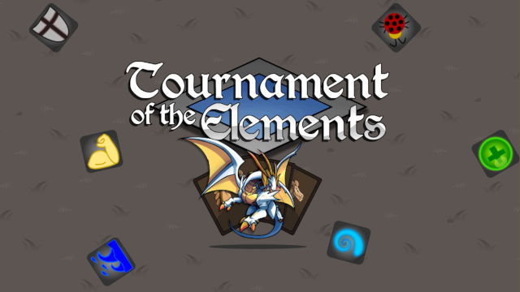

Here is a list of some of the game prototypes I have made up to now.
There are many interesting aspects of them but most of them never got past the prototype state.
What most of the games have in common is that they are made in 2d since that is both an easier style to make games in and it's the kind of style I'm fond of.
Most of them are also made by trying to boil down the core aspects of certain games and then try to make a new game focusing on those aspects.

A 2D auto battler inspired by Auto Chess developed for mobile platforms with a focus on making sure that the player can follow along with the action.
This is my first and only fully released game I have made so far which I released for Android.
I focused on making a 2D-auto battler because I wanted one to play but at the time there where none.
All of them were also multiplayer which ment playing one was a time commitment.
I wanted to solve those problems while making the game mobile which I think I managed to fulfill.
By adding AI players and boiling down stats and menus to better suit the small screen of a phone.

A 1v1 collectible card game where all cards have been replaced with 6-sided dices which adds an additional dimension.
The game I've been working on the last year and are close to finished at this point.
I wanted to explore what could be done if you were to make a collectible card game but with dice instead.
They have the possibility to show different side each time you play them which adds some randomness but also some flexibility since they can be used in multiple situations.
The unfortunate part is that the scope of the game started to grow too big so I had to find a good place to stop so that I can start focusing on more useful ideas.
You will need enough testing, multiplayer support and a large enough player base to support multiplayer.
Monster taming-game where you hack machines to fight for you in order to push back the oppressing machines.
This game is similar to Pokémon in that you move around in a top-down world and battling other machines using the machines you have hacked.
The overworld is more inspired by Diablo 2 in which that it is semi-random and you'll never know how the map will look next time you leave the base camp.
There is also more focus on the survival aspect as machines can get damaged and you need to scrounge up enough resources to hack more machines and reach the next boss.
A war-like competitive deck building game where you assimilate atoms in order to create the strongest molecule.
For this game I wanted to make a tactical wargame where it wouldn't necessarily be better to control more nodes as is customary with this type of game.
The plan was to use a deck builder to allow players to evolve there molecules in different directions depending on the situation.
The number of nodes will give players more options but will also make them more susceptible to attacks from their opponent since there are more nodes to protect.

Searching for artifacts in temples while avoiding traps is difficult. It's even more difficult when it's pitch dark inside.
A small prototype I made to explore the concept on how you could represent playing as a blind character in a game.
Only showing things based on sounds makes for an interesting design challenge but also opens up for interesting gameplay.
You could make the game a puzzle game with a top down 2d-camera or make it a horror game by using a 3d-camera.